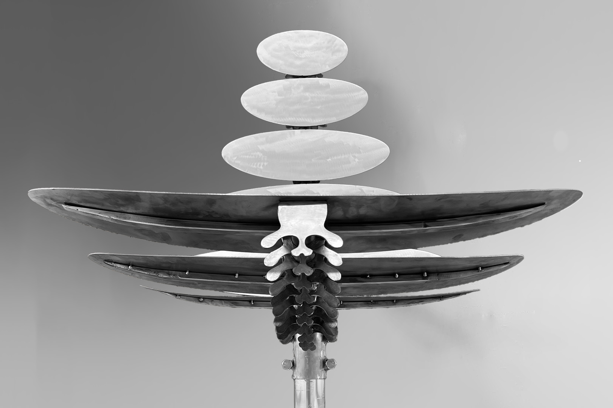
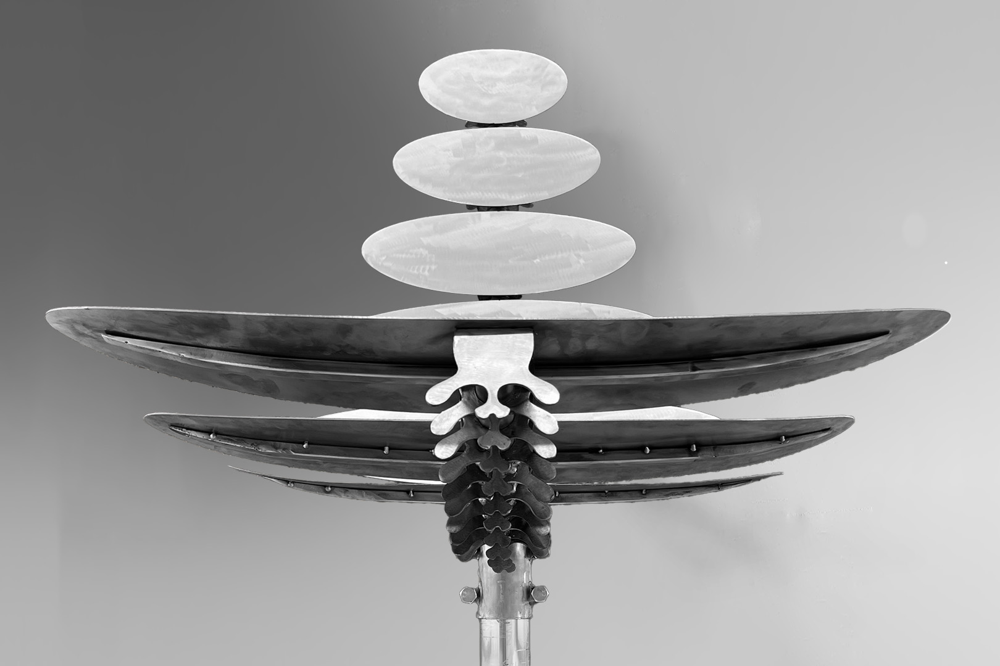

Dette prosjektet er laget i forbindlse med et emne som heter materialfordypning. Stolen er designet og bygget på en måte som nesten bare metall tillater. PLatene er bare 2.5mm tykke, men denne stolen kan fint holde en person på over 100kg. Prototypen er laget stål og med en fot hentet fra en gammel bang & olufsen tv, noe som også gir stolen en elektrisk roterende funksjon.
 

How It's Made

Mockup
Første mockup viser en god visualisering av hvordan stolen kommer til å se ut. Her laget med stål vaier og laserkuttet papp.

Pappsete
Før jeg kutter ut setene i metall, kuttet jeg ut setene i papp for bekrefte at størrelser stemmer og at lengden på røret(ryggraden) er korrekt for å få riktig mellomrom mellom seteplatene.

Plasmakutter
Når størrelsen på setene var bekreftet riktig, var neste steg å kutte dem ut i metall. Jeg valgte 2.5mm tykt stål for å gi god styrke, men også for å unngå at den ble for tung.
Forsterke strukturen
2.5mm tykt stål blir litt for svakt på de lengste sitteplatene. For å opprettholde det minimalitsike og "lette" designet, sveiste jeg på en stang under som ellers usynelig fra de fleste vinkler.

Ryggraden
Ryggraden består av 32 plasmakuttede metalldeler. Disse er sveiset sammen til en metall plate og er så presset ned i form for å gi lik lengde og vinkel på begge side. Disse er så boltet fast i sitteplatene og blir så sveiset til røret.

Testfit
En siste testmontering gjenstår før sveising for å sjekke om det trengs justeringer – noe det alltid gjør. Ryggvirvlene ble senere redesignet for bedre styrke, og samtidig justert for å unngå spisse kanter, et viktig hensyn hvis barn løper rundt.
Sveising
Når alle deler passer gjenstår sveisingen. Alle ryggvirvlene monteres på sitteplatene og blir så tredd på stålrøret for å bli sveiset på plass. Her var mellomrommet mellom sitteplane spesielt viktig å få riktig.